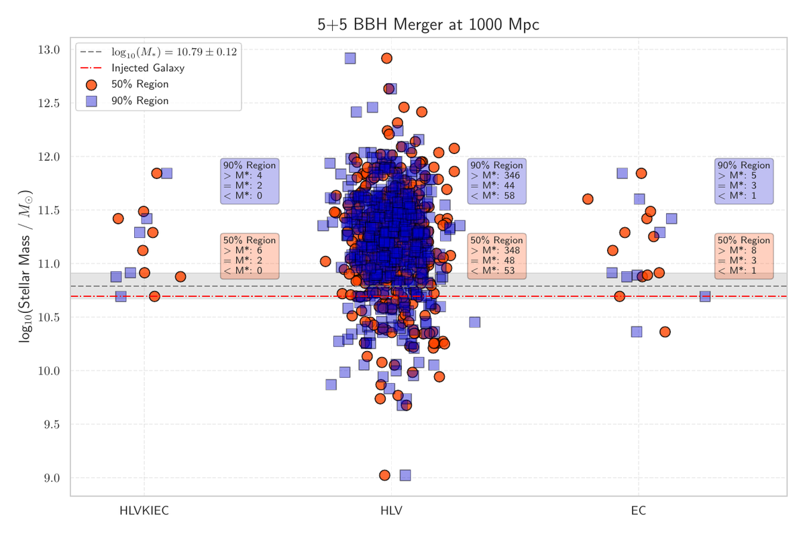
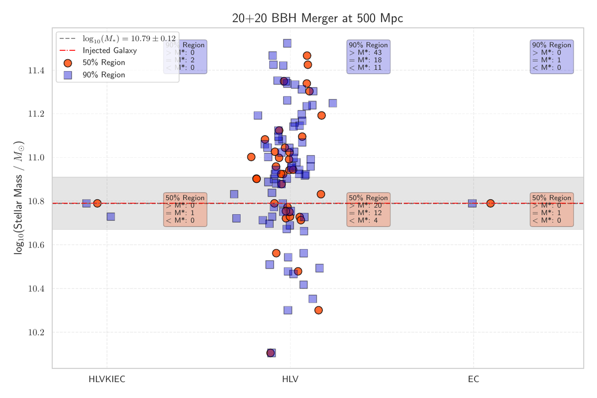

Network Comparison
Select a configuration from the sidebar to compare networks across distances and mass combinations.
1000 Mpc – 50+50
1000 Mpc – 40+40
1000 Mpc – 30+30
1000 Mpc – 20+20
1000 Mpc – 10+10
1000 Mpc – 5+5

750 Mpc – 50+50

750 Mpc – 40+40
750 Mpc – 30+30
750 Mpc – 20+20

750 Mpc – 10+10
750 Mpc – 5+5

500 Mpc – 50+50
500 Mpc – 40+40
500 Mpc – 30+30

500 Mpc – 20+20

500 Mpc – 10+10
500 Mpc – 5+5